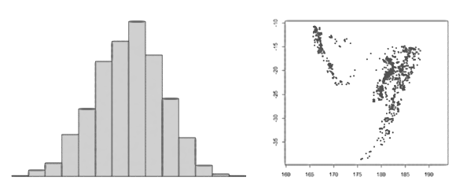

Plotting 101

While there are many plotting packages, plotting functions in Base R include:
plot()
plot(…, add=TRUE) overlays more data on the last plot
hist()
barplot()
boxplot()
‘Base R’ refers to the functions available when you first install R (as opposed to functions in additional packages you install later.)
The terms Plot and graph are generally used interchangably.
Generate these plots. What do the pch and cex arguments do?
[Solution]
Top Five Arguments for Plotting Spatial Data
| Argument | Effect on Plot |
|---|---|
| asp = 1 | aspect ratio |
| col=“red” | fill color |
| border=“blue” | outline color |
| pch=16 | point symbol (16 = round dot) |
| axes = TRUE | draw axes |